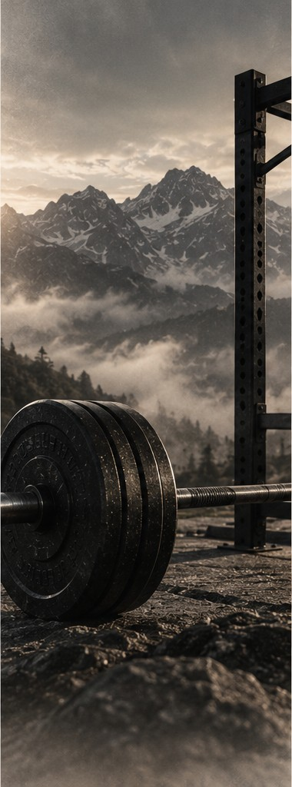

FAITH
A deeper foundation.
EXPLORE →SAME FOUNDATION.
A deeper foundation.
EXPLORE →
A stronger body.
EXPLORE →A healthier tomorrow.
EXPLORE →A higher purpose.
EXPLORE →“For bodily exercise profiteth little: but godliness is profitable unto all things, having promise of the life that now is, and of that which is to come.”1 TIMOTHY 4:8

FAITH · TRAINING · FUEL · DISCIPLINE
Affordable snack ideas that are easy to keep in a dorm or backpack.
A basic three-day lifting structure built around consistent practice.
Fast breakfast ideas that are easier to fit around early classes.
Simple gym bag basics that are useful without wasting money.
Easy foods that make it simpler to hit calories and protein without wrecking your budget.
A straightforward look at what creatine does, how people commonly use it, and what to know before buying it.
A repeatable plate-building method that works even when the dining hall menu changes.
Come to me, all who labor and are heavy laden, and I will give you rest.
Christ • Dunamis • Faith • Serve.
Training, nutrition, and clothing are part of BuiltBasix — but they aren't what it's built on. Christ is.
We publish practical guides on strength, food, and faith, and we're building apparel meant to outlast trends, for men and women who want to train hard without losing sight of what actually lasts.